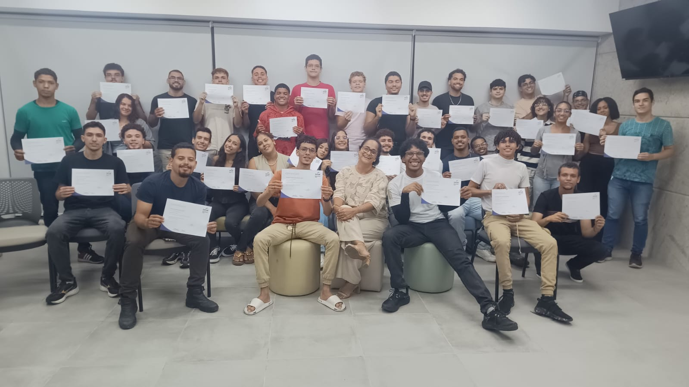

Projetos
experiências práticas
TURMA 140
Uma colisão de mentes brilhantes, inovação radical e disrupção total. Bem-vindo ao portal oficial onde o futuro da Turma 140 se materializa agora.

Somos o coração que
Aprende Fazendo
Uma turma formada por pessoas curiosas, criativas e determinadas a transformar ideias em experiências digitais. Aqui, cada desafio vira aprendizado e cada projeto conta uma parte da nossa história.
Galeria da Turma 140

#01 · Bastidores

#02 · Collab Lab

#03 · Hackathon Vibes
Quem nos guia
nessa jornada?
Aprender fazendo é também aprender com quem compartilha experiência. Nesta etapa, apresentamos a pessoa responsável por orientar a turma em seus desafios.

Desenvolvimento
Web Front-End
Estrutura Curricular
As pessoas que
fazem a Turma 140
Front-End
Desenvolvimento Full-Stack.
 Fabio Araujo
Fabio Araujo
Fundador da Lumminin e Desenvolvedor FrontEnd.
Desenvolvedor Full-Stack
 Letícia Rosa
Letícia Rosa
Design e desenvolvimento Full-Stack.
 Vitor Gabriel
Vitor Gabriel
Desenvolvimento Front-End.
 Wilton Gabriel
Wilton Gabriel
Análise de dados e Desenvolvimento Full-Stack